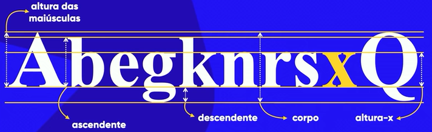

Capítulo 14 - Tipografia
Parte 01 - Primeiros passos em Tipografia
- Forma de um tipo

Quando mudarmos o tamanho da fonte no CSS (font-size), iremos mexer no tamanho do corpo da tipografia. -
Categorias de Fontes
A recomendação é: Textos muito longos em site, preferência de fontes não serifadas. Já em papel, fontes serifadas.
Parte 02 - Fontes em CSS
Existem vários tipos de fontes em CSS e para mudarmos a fonte devemos efetuar um código CSS com a tag font-family: fonte;
Caso queira ver as fontes seguras (Existem em todos dispositivos)
Exemplo de Fontes
- serif
- sans-serif
- monospace
- cursive
- fantasy
Exemplo de código com uma fonte:
body{
font-family: Arial, Helvetica, sans-serif;
}
Neste caso, a primeira fonte da esquerda para a direita será a predominante. Se o dispositivo não for compatível com a fonte, a próxima passará a ser a predominante.
Parte 03 - Tamanho e medida de uma fonte
- Tipos de tamanho
-
Medidas Relativas:
- em → medida relativa ao tamanho atual da fonte (1em = 16px = fonte normal)
- ex → altura em x
- rom
- vw → viewport width (tela)
- vh → viewport height (tela)
- %
-
Medidas Absolutas:
- cm → centímetro
- mm → milímetros
- in → polegada
- px → pixel
- pt → ponto (O mesmo que o word)
- pc → paica
-
Medidas Relativas:
- Medidas recomendadas → px e em
- Tamanho padrão de uma fonte → 16px ou 1em
Parte 04 - Peso, estilo e shorthand font
- Códigos para mexer nas fontes:
font-weight: normal;→ lighter, normal, bold, bolder /// 100 - 900
font-style: normal;→ italic, oblique, normal
font-size: 3em;→ tamanhos absolutos /// tamanhos relativos
font-family: 'Arial';→ qualquer fonte
text-decoration: underline;→ sublinhar a fonte -
Shorthand
font: font-style font-weight font-size font-family
font: italic bolder 1em 'sans-serif';
Parte 05 - Novas fontes
-
Fontes com Google Fonts
Site com fontes → Google Fonts
Site para baixar fontes → DaFont
Para importar uma fonte do google fonts teremos somente que importar a url da fonte, presente no site.
@import url('https://fonts.googleapis.com/css2?family=Indie+Flower&display=swap')
Depois é só selecionar a fonte nofont-family: Indie Flower; -
Fontes baixadas
Tipos de fontes:
→ OpenType (otf)
→ truetype (ttf)
→ embedded-opentype ()
→ truetype-aat (Apple Advanced Typography)
→ svg
Ao baixarmos a fonte e colocarmos numa pasta junto com o seu index.html e style.css, devemos utilizar um código para importar a fonte dentro do seu PC:
@font-face { font-family: 'ESCOLHER UM NOME' src: url('fonts/love story.ttf') format('truetype'); }font-family: 'nome da fonte';com o nome que escolhemos.
Parte 06 - Alinhamentos
-
Tags:
→ text-align: "center || justify || right || left"
→ text-indent: 20px; - Argumentos da tag:
- center → Alinha no centro
- left → Alinha na esquerda
- right → Alinha na direita
- justify → Alinha o parágrafo em toda linha, sem espaços no fim e no início.